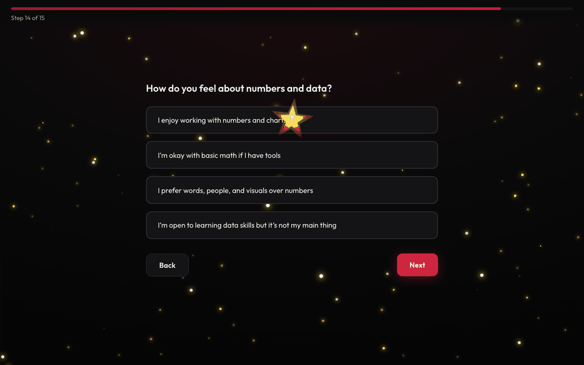

Tech Pathway Navigator
From Cycle 19 — inspire Cycle 20’s showcase ideas
Something beneficial and helpful, built for people figuring out tech careers.
What we’ll cover
Aligned with how we’re asked to share project experience — clear, relatable, conversational.
1. The problem
What problem, who it was for — simple and relatable.
2. The solution
What I built and why it works — light on deep tech, heavy on impact.
3. Role & ownership
Ideas, UX, shipping — and how to talk about tools honestly (including on team projects, where clarity matters).
4. How to talk about it
Guests, employers, expo — what worked and what I’d do differently.
Then: brainstorm + Q&A
Brief brainstorm prompts for Cycle 20, then open Q&A.
Quick intro
- Cycle 19 intern — I commenced in December; I’m now a Cloud Security Engineer Intern. I’m here to help this cohort and the i.c.stars community.
- I’ll follow the four-part story (problem → solution → my role → how I talk about it), then a few ideas for the Cycle 20 showcase.
- Goal: a clear model for telling a coherent story with confidence — not copying this exact build.
1. The problem
How I landed on this
- Coming into i.c.stars, I was new to tech — I didn’t know the roles or what was even out there.
- I built this because I know many interns were in the same position as me: overwhelmed by titles and unsure where to start.
- The goal was simple: a friendly place to explore paths in plain language — quiz, matches, deeper info, and real links — so someone can take a clearer next step.
The north star — a simple guide
Before picking tools or features, answer these three questions. They keep the project grounded and helpful.
- Who exactly is this for? One real group (e.g. new interns, family, job seekers). If it’s for “everyone,” narrow it until it isn’t.
- What should they leave with? One concrete outcome: a next step, a clearer choice, or less stress — not “inspiration” alone.
- What happens in the first minute? — A visitor should open it cold, know what to tap or read, and get something useful right away. If the demo needs a long explanation up front, cut scope until the opening is obvious.
2. The solution
What it is (one sentence)
Tech Pathway Navigator is a short quiz that matches someone to possible tech career paths, then shows plain-language deep dives and curated learning links — including certifications and regions when relevant.
User flow (at a glance)
How it works
- Questions — how someone likes to work, learn, and grow.
- Top matches — ranked roles with short descriptions.
- Deep dive — day-to-day, how to get there, salary context.
- Resources — courses, certs, practice tools (linked out).
What it’s built with
Plain HTML, CSS, and JavaScript — no heavy framework. Implemented with Cursor (AI-assisted coding); the next slide is what I owned — ideas and layout vs. where the tool helped — and how I think about that for interviews.

Who it’s for
Interns & career changers
Exploring roles without getting lost in confusing job titles and buzzwords.
Coaches & mentors
Still beneficial for coaches in 1:1s — review paths together, talk through matches, and point to concrete next steps.
3. Role & ownership
What I owned
I own this project end-to-end: the ideas, what I wanted the app to do, and the layout — how it reads and flows. Cursor helped me implement faster, but the decisions and UX were mine. I started in VS Code; it was really bumpy. At my current job I got introduced to Cursor and saw how AI-assisted coding (including what people call vibe coding) is normalized — bigger companies use these tools every day, not as a shortcut but as part of how work gets done.
- Quiz & what’s on the page: what the questions are, how answers map to roles, the short blurbs for each path, and the resource links I pulled together.
- How it looks & reads: layout, colors, making it work on a phone or a laptop — English and Spanish so more people can use it.
- Actually online: hosted it so there’s a real link people can open during the expo — not just a file on my computer.
For cohorts: In my cycle many people worked on projects together — that’s normal — but guests still need an individual thread per person. When work is paired or split, name what was each person’s vs. support; with AI, name what each person steered and stood behind. That honesty reads well.
4. How to talk about it
How I explain this to guests & employers
- My pitch: one sentence on the problem → quick walkthrough (quiz → matches → deep dive → resources) → optional live demo or QR.
- What worked: leading with why it exists, explaining it in plain language anyone in the room can follow, and letting people try it on their phone.
- What I’d do differently: practice a tighter 2-minute version; even fewer slides; repeat the “who it’s for” line so it sticks.
This part is often the most useful for interns — communicating the work clearly, not only listing what got built.
Try it — scan the QR
Open the navigator on a phone: start → answer a few questions → results → expand a role → resources.
Getting ideas for a showcase project
- Who — one group the project cares about (cohort, family, community).
- Pain — what’s confusing, slow, or stressful?
- Why tech? — how could a simple site or app help more than a flyer, email, or PDF?
- Scope — something demoable in 2–3 minutes.
- Why it matters — one sentence.
Quick brainstorm (optional)
In pairs or small groups: What problem is someone in the community facing? Write one sentence idea + who it helps.
Example: “A small site that lists free community resources (food, childcare, clinics) by neighborhood — for people who don’t know what’s available or how to apply.”
Share 2–3 out loud if there’s time.
Takeaways
- Start from real need, not the coolest tech.
- Ship something small people can try in the room.
- Each person’s story is part of the showcase — own it.
Closing
One takeaway: pick a problem that actually matters — then ship the smallest real thing that lifts someone else up. That’s how real showcase projects (and real careers) start.
Questions?
Thank you — good luck with the Cycle 20 showcase.